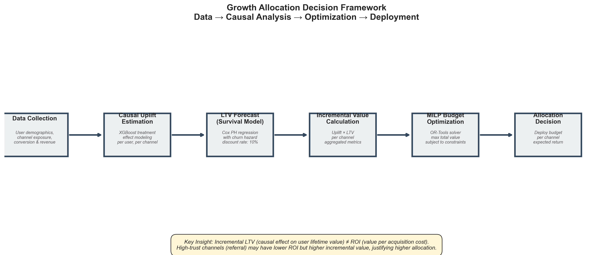

Causal budget optimization for scalable growth: why ROI-based budget decisions fail at scale, and how
incremental LTV with constrained optimization produces safer, higher-value allocation.
TL;DR — Product Decision
❌ ROI-based allocation over-invests in saturated, low-quality channels
⚠️ Paid Search shows strong volume but diminishing marginal value
🚩 Social Ads drive low incremental LTV and poor risk-adjusted profit
✅ Referral and Organic create the highest causal lifetime value per dollar
Decision: Adopt causal, constraint-aware budget allocation. Reallocate spend away from low-value channels and cap channels with diminishing returns.
Product Context
As products scale, growth teams face a fundamental question: where should the next dollar be spent to maximize long-term value?
Surface metrics like conversion rate, CPA, and ROI can mislead at scale because of selection bias, saturation, and user-quality heterogeneity. This case study shows a different approach: optimize for causal incremental LTV under portfolio constraints.
What We Measured
Primary (North Star): Incremental Lifetime Value (LTV) — additional long-term value caused by a channel.
Secondary: Channel saturation and diminishing returns; incremental value per dollar.
Approach 1 — Naive Growth Analysis (The Wrong Way)
The naive approach allocates by ROI (value ÷ cost). At small scale this can look reasonable, but it ignores selection bias, saturation, and user-quality heterogeneity. Channels that appear efficient often deliver lower long-term value.
Approach 2 — Causal Growth Analysis (The Right Way)
Step 1: Causal Uplift Estimation
Estimate incremental conversion lift per channel using uplift modeling on propensity-balanced cohorts. This answers: "Which users converted because of this channel?"
Step 2: LTV Forecasting
Forecast long-term value with a survival-based model (Cox Proportional Hazards), accounting for churn over a 24-month horizon and a 10% annual discount rate.
Step 3: Incremental LTV Calculation
Combine uplift and LTV: Incremental LTV = Uplift × Expected Lifetime Value. Aggregate by channel to get true value creation per channel.
Social Ads: $5.62 (lowest causal value, high churn)
ROI tells a different story. Organic shows highest ROI (34.7x) due to low cost, but delivers lowest lifetime value per user. Simple ROI metrics hide user-quality heterogeneity.
Channel saturation dominates scaling. Paid Search exhibits diminishing marginal returns as spend increases; incremental value does not scale linearly.
Risk-adjusted profit penalizes low-quality growth. Social Ads appear scalable on surface metrics but yield the lowest incremental LTV and highest churn risk.
Budget Optimization: Turning Insight Into Action
We formulated budget allocation as a constrained optimization problem:
Objective: Maximize total expected incremental value.
Constraints: Fixed total budget; minimum spend per channel; maximum spend per channel to limit saturation; non-negativity and portfolio balance.
Optimized Allocation vs Baseline
Same budget ($500k) — optimized allocation delivers +$116k expected value (+2.4%).
Final Allocation Decision
The optimized MILP allocation shifts $53.3k from Social Ads (lowest LTV) to Paid Search (good secondary value), while preserving Referral and Organic at their efficient frontiers:
Same $500k budget — better allocation. No new channels, no additional spend. Just applying causal insights to rebalance toward higher-value, lower-risk growth.
Why Naive ROI Would Have Failed
Consider what naive ROI-based allocation would suggest:
Organic: 34.7x ROI (cheapest, lowest cost per acquisition) — maximize spend
Referral: 21.2x ROI (high quality but reach-limited) — hold or minimize
Paid Search: 5.0x ROI (expensive but scalable) — secondary priority
Affiliate: 4.2x ROI (mid-tier efficiency) — low priority
Social Ads: 2.8x ROI (lowest efficiency) — minimize
Yet this ranking is deceptive. Organic users have low lifetime value ($6.94) despite appearing cheap. Referral users have the highest LTV ($21.22) despite lower ROI. If we had optimized by ROI, budget would have concentrated on low-quality channels and quietly eroded long-term value growth.
Recommendation & Next Steps
Adopt causal, constraint-aware budget optimization as the default growth framework.
Monitor channel saturation monthly and re-estimate uplift as user mix evolves.
Run sensitivity analysis on discount rate and churn assumptions.
Extend the framework to capture multi-touch and cross-channel interactions.
Technical Appendix (Summary)
Uplift Modeling: XGBoost treatment effect estimation on propensity-balanced cohorts.
Optimization: OR-Tools MILP maximizing incremental value under constraints.
Assumptions & Limitations
Stationarity of uplift and churn
Independent channel effects (no synergies modeled)
Fixed user mix and finite planning horizon
Figures & Evidence
Incremental LTV by Channel
Spend vs Incremental Value (Saturation)
ROI vs Incremental LTV
Executive Summary Flow

Conclusion
Optimizing growth requires optimizing causal value, not surface-level efficiency. In this case study, ROI overstated the value of Paid Search and obscured the damage from Social Ads. By refocusing on incremental LTV and operationalizing constraints through MILP, the team achieved better growth with the same budget and lower downside risk.
Decision: Move budget allocation from ROI heuristics to causal incremental LTV optimization — same budget, better growth, lower risk.